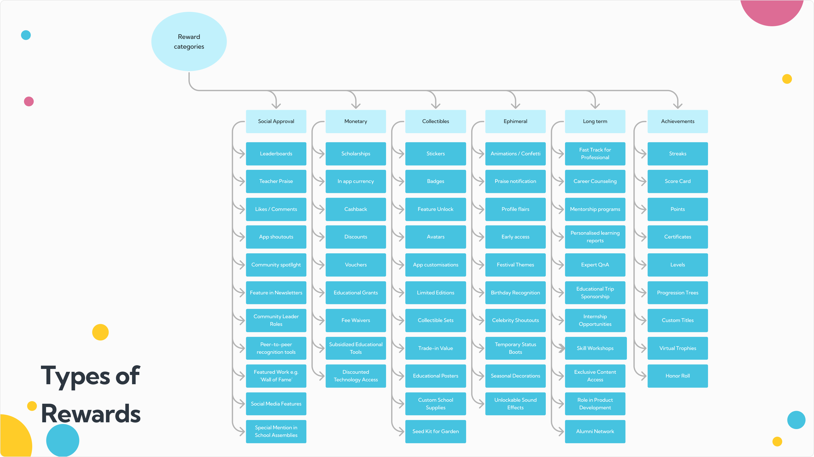
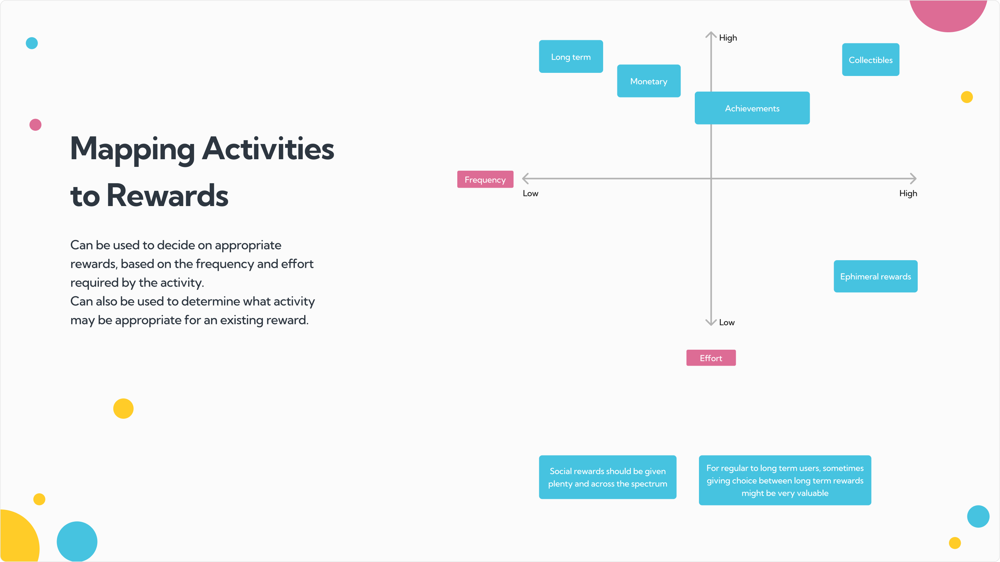
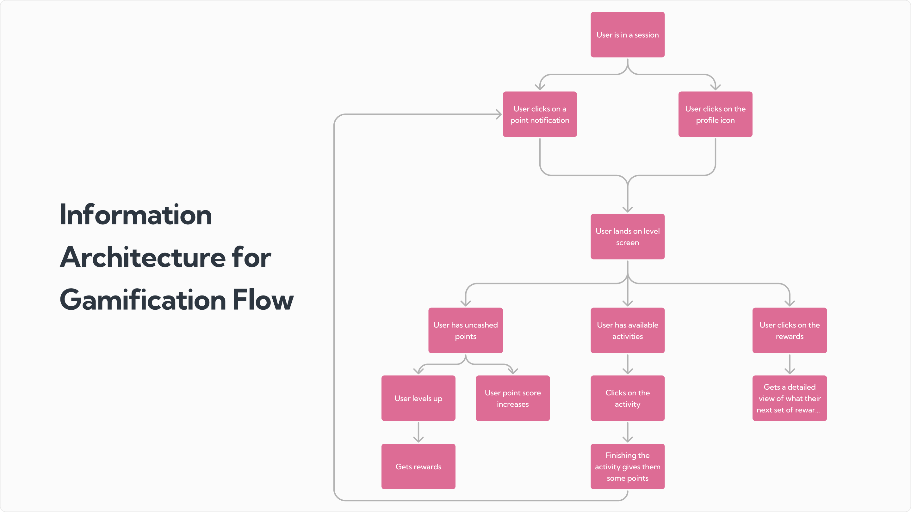

ConveGenius · Case study — research & strategy → product
Gamification looks like an obvious fix for engagement. How do you turn it into a strategy?
ConveGenius is an Indian ed-tech company serving private schools and state governments — 100,000 monthly active students across a deep product. But students treated the app like homework: they did what was mandatory and left. The team wanted deeper engagement, and came to us with the idea of a rewards layer. We'd worked inside Indian ed-tech before, so instead of ramping up we went straight to the work — and turned "add rewards" into a system grounded in who their students actually are.
User Research
Gamification
Motivation & Behavioural Design
India100,000 MAU300+ employees₹75 Cr revenue
the brief, examined
A rewards layer is a feature. Engagement is a behaviour-change problem.
"Add rewards" is where most gamification starts and stops — points bolted onto whatever's already there. We took the brief apart first. Before deciding what to reward, we split the goal in two:
Goal one
Growth
Pull students into features they haven't found yet — broadly targeted, low cost to run, designed to spread.
rewarded with ephemeral & social wins
Goal two
Engagement
Bring students back to the features they've already found — tuned to specific personas, higher investment, longer payoff.
rewarded with collectibles & long-term achievement
The split makes measurement honest. Without it, every feature gets judged on the same easy metrics — views, clicks — even when it was built for something bigger.
↓ but you can't reward a student you haven't mapped
first — the student
We started with motivation, not mechanics.
Across two working sessions with the ConveGenius team, we mapped the students before we touched the reward design — who's on the app, what they come to do, and what already nudges them. Five motivation types fell out:
Each persona leans on different motivators — the raw vocabulary the reward system would later draw on.
Then we mapped what students actually do. A long list of activities — olympiads, quizzes, live competitions, bots, educational games, the posts feed — collapsed into eight underlying goals, each wanting its own rhythm:
↓ goals set, students mapped — now, how do we reward them?
the system
A repeatable way to gamify — not a pile of features.
We gave the team a process they could run on any activity, not a one-off feature spec:
01Decide on the activity
02Split it into components
03Determine motivation types
04Weigh effort vs frequency
05Create & assign rewards
For this version we recommended points tied to activities, with rewards unlocked by levels — so the more (and the more meaningful) the things a student does, the more they earn.
Two taxonomies gave the framing a shared language — five student motivations on one axis, six reward types on the other. The team could now weigh a reward's purpose against the student it's for when discussing build cost.

Six reward types, from ephemeral confetti to long-term mentorship.

Mapped on effort × frequency: which reward fits which activity — and vice versa.
Rewards then change by where a student is in their journey — curiosity for newcomers, habit for regulars, loyalty for the long-haul:
↓ a system on paper — where does it live in the app?
from framework to screens
Concept agreed — then we drew where it actually lives.
An information architecture tied the theory to real moments in the app: the entry points students hit it from, the state checks behind it, and the reward outcomes that follow.

The gamification flow, end to end — entry points, state checks, reward outcomes.
Low-fidelity wireframes gave design and dev a shared map before the graphics and animation came up — a clean handoff:
what we left them with
A buildable system — and a way to keep making decisions after we left.
A strategy, not a feature. Growth vs engagement as a lens, so every reward has a job and a way to be measured.
Research the team owns. Five student motivations and eight activity goals — the vocabulary their PMs now use to argue about build cost.
A repeatable process. Five steps to gamify any future activity, without coming back to us.
A clean handoff. An IA flow and wireframes that took design and dev straight to building.